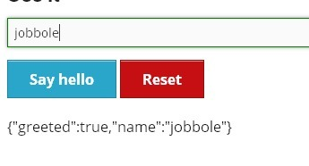

AngularJs
入门
Hello World
<!doctype html>
<html ng-app>
<head>
<script src="../angular.min.js"></script>
</head>
<body>
<div>
<input type="text" ng-model="yourName" placeholder="Enter a name here">
<h1>Hello, {{yourName}}!</h1>
</div>
</body>
</html>
就这样没有任何代码就实现了内容与文本框一起改变的功能：
-
ng-app标记了一个模块，没有它AngularJs不会起作为。 -
ng-model="yourName"建立了文本框与模型yourName的双向绑定。 -
{{yourName}}显示模型的值。
应用实例
通过实践创建一个项目myApp来学习，把js代码都放在js/main.js中。
定义模块
通过angular.module方法定义模块，
var app = angular.module('myApp', []);
这样在页面上可以声明把模块绑定到指定的DOM中：
<!doctype html>
<html ng-app="myApp">
<head>
<script src="../angular.min.js"></script>
<script src="js/main.js"></script>
</head>
<body>
</body>
</html>
绑定的地方就是AngularJs运行应用的地方。
Scopes
$scope是一个把view（一个DOM元素）连结到controller上的对象。在我们的MVC结构里，
这个$scope将成为model，它提供一个绑定到DOM元素（以及其子元素）上的excecution
context。
尽管听起来有点复杂，但$scope实际上就是一个JavaScript对象，controller和view都
可以访问它，所以我们可以利用它在两者间传递信息。在这个$scope对象里，我们既存储
数据，又存储将要运行在view上的函数。
每一个Angular应用都会有一个$rootScope。
这个$rootScope是最顶级的scope，它对应着含有ng-app指令属性的那个DOM元素。
如果页面上没有明确设定$scope，Angular就会把数据和函数都绑定到这里，第一部分中
的例子就是靠这一点成功运行的。
在这个例子里，我们将使用$rootScope。在main.js文件里，我们给这个scope加一个
name属性。把这个函数放进app.run函数里执行，我们就保证了它能在应用的其他部分
之前被执行。你可以把app.run函数看作是Angular应用的main方法。
app.run(function($rootScope) {
$rootScope.name = "Ari Lerner";
});
现在，我们可以在view的任何地方访问这个name属性，使用模版表达式{{}}，像这样
：
{{ name }}
在这个系列之后的章节里，我们会深入介绍模版表达式的语法。
页面上显示的结果就是：
Ari Lerner
要真正看到scope的强大功能，让我们给一个DOM元素加上controller，它将创建这个元素的
$scope ，让我们跟这个元素互动。
ng-controller
要明确创建一个$scope对象，我们就要给DOM元素安上一个controller对象，使用的是
ng-controller指令属性：
<div ng-controller="MyController">
{{ person.name }}
</div>
ng-controller指令给所在的DOM元素创建了一个新的scope对象，并将这个scope对象
包含进外层DOM元素的scope对象里。在上面的例子里，这个外层DOM元素的$scope对象，
就是$rootScope对象。这个scope链是这样的：

现在，MyController给我们建立了一个可以从DOM元素内部直接访问的scope对象。下面
我们在的这个scope里创建一个person对象，在main.js中：
app.controller('MyController', function($scope) {
$scope.person = {
name: "Ari Lerner"
};
});
现在我们可以在有ng-controller=’MyController’属性的DOM元素的任何子元素里访问
这个person对象，因为它在$scope上。
页面上显示出：
Ari Lerner
除了一个例外，所有scope都遵循原型继承（prototypal inheritance），这意味着它们
都能访问父scope们。对任何属性和方法，如果AngularJS在当前scope上找不到，就会到父
scope上去找，如果在父scope上也没找到，就会继续向上回溯，一直到$rootScope上。
唯一的例外：有些指令属性可以选择性地创建一个独立的scope，让这个scope不继承它的 父scope们。
举个例子，假设我们有一个ParentController，含有一个person对象，又有一个
ChildController想要访问这个对象：
app.controller('ParentController', function($scope) {
$scope.person = {greeted: false};
});
app.controller('ChildController', function($scope) {
$scope.sayHello = function() {
$scope.person.greeted = true;
}
});
当我们在view里把ChildController绑定到ParentController之下，在子元素里我们
就能访问ParentController创建的父scope的属性，像访问ChildController自己的
scope中的属性一样：
<div ng-controller="ParentController">
<div ng-controller="ChildController">
<input type="text" ng-model="person.name" placeholder="Name"></input>
<a ng-click="sayHello()">Say hello</a>
</div>
{{ person }}
</div>

页面效果为：

结合进myApp
现在，我们把scope用在我们的NPR应用上。在上一篇结尾我们定义了app module，现在
我们开始深入DOM结构，创建基本功能。
像在上面的例子里展示过的那样，我们先创建一个root controller，命名为
PlayerController。还有一个RelatedController，它将负责管理音频DOM元素、和为
我们取回NPR节目的列表。
回到main.js，现在我们就来创建这两个controller：
var app = angular.module('myApp', []);
app.controller('PlayerController', ['$scope', function($scope) { }]);
app.controller('RelatedController', ['$scope', function($scope) { }]);
音频
这两个controller现在还没什么功能，那么，让我们给应用先加上点声音吧。在这个教程里 我们将使用HTML5的音频DOM元素，所以首先你得有个支持HTML5的浏览器（我们推荐Google Chrome）。
这个音频DOM元素，我们既可以把它加在HTML里，又可以加在我们的controller里。不过 鉴于我们主要使用controller跟这个音频DOM元素互动，把它创建在controller里更合适。
现在我们就在PlayerController里创建一个音频DOM元素。我们要把它储存在scope上，
然后像你已经学过的那样——通过$scope对象把view和controller连接起来。
app.controller('PlayerController', ['$scope', function($scope) {
$scope.audio = document.createElement('audio');
}]);
这个设定现在可能有点无聊，因为它还不能干什么。我们会在本系列的下一篇介绍取回（
fetching）数据，现在我们先使用一个指定的.mp4网址。
还是在这个PlayerController里，指定音频文件的src属性为一个你能访问的.mp4
网址。方便起见，我们在这里使用一个储存在我们自己服务器上的NPR音频文件，不过其实
你可以指向任何网址。现在设定你的音频src地址如下：
app.controller('PlayerController', ['$scope', function($scope) {
$scope.playing = false;
$scope.audio = document.createElement('audio');
$scope.audio.src = '/media/npr.mp4';
}]);
音频不会自己播放，我们必须让它播放。要做到这一点，我们可以简单地使用
$scope.audio.play()，然后HTML5音频DOM元素就会开始播放mp4媒体流。
我们可以给用户提供一个互动元素：创建一个按钮，把它绑定到scope里的一个动作上。 在下一篇里我们会更深入地介绍这一块，不过先看看上面例子里view的HTML：
<div ng-controller="PlayerController">
<button ng-click="play()" class="button" ng-show="!playing">Play</button>
<button ng-click="stop()" class="button alert" ng-show="playing">Stop</button>
Playing audio: <b>{{ playing }}</b>
</div>
注意我们并不需要引用在scope里创建的那个音频DOM元素，因为它是当我们载入controller
时在controller内部用document.createElement("audio")创建的。在之后的教程里我们
会重构这个部分，因为在controller里操作DOM元素一般都不是个好主意（感谢Brad Green
在评论中指出这一点。）然而为了简便，我们在这里还是保持这个controller如此。
在view里我们已经加入了一些变量，在scope上我们要管理这些变量。这里使用了一些高级 概念，这些在本系列之后的教程里才会详细介绍，所以如果你不能一下子全看明白也不用 担心：
app.controller('PlayerController', ['$scope', function($scope) {
$scope.playing = false;
$scope.audio = document.createElement('audio');
$scope.audio.src = '/media/npr.mp4';
$scope.play = function() {
$scope.audio.play();
$scope.playing = true;
};
$scope.stop = function() {
$scope.audio.pause();
$scope.playing = false;
};
$scope.audio.addEventListener('ended', function() {
$scope.$apply(function() {
$scope.stop()
});
});
}]);
以上就是对Angular.js的$scope功能的介绍。在下一章，我们会介绍Angular.js的双向
数据绑定。